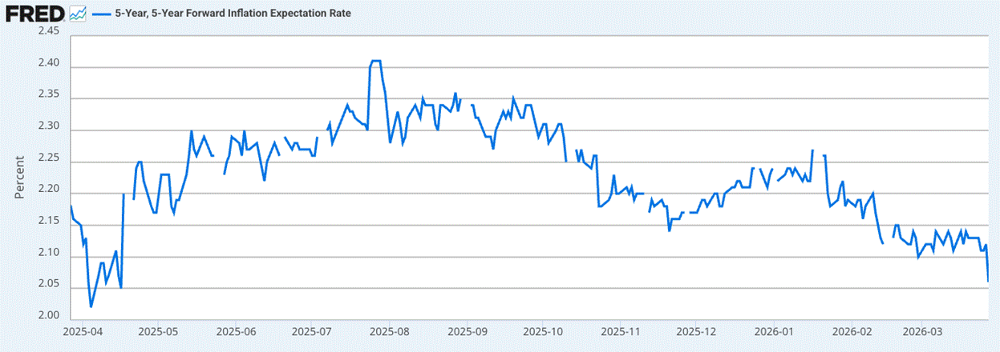

It is becoming increasingly difficult to publish a macro focused idea when markets right now are dominated by the ebb and flow of geopolitical headlines. Oil and US treasury yields are the only two macro factors that appear to matter short term and they are conducting risk and everything else correlated.
Bitcoin covers the far left and far right tail of the risk distribution and indeed, Bitcoin has outperformed virtually every macro asset, aside from oil, since the outbreak of the war.
Whilst higher oil, a stronger dollar and rising bond yields, or more importantly rising bond volatility, are HUGE liquidity headwinds for Bitcoin, Bitcoin as a non sovereign, borderless asset remains the ultimate hedge against the failure of existing economic and political structures. Certainly, Mr Trump is ripping up the existing global order and there are few places of safety to hide outside of Bitcoin and gold.
Gold
The underperformance of gold since the start of the Iran war perhaps contradicts the above statement. However, just like Bitcoin's underperformance over the past few months since hitting record highs in October, the idea that Bitcoin was failing to act as a hedge against debasement or inflation never held water (Bitcoin is up 10x since 2020 when the Fed and others sparked global inflation via mass money printing amid shuttered supply chains), gold is similarly "failing" for structural flow reasons rather than a fundamental failure as a safe haven.
This is important to understand because once those flows abate, gold will likely resume its path higher, making new highs as it reconnects with its fundamentals. Ditto for Bitcoin which suffered heavy structural selling since Q4 2025 from whales taking profit, perhaps driven by a pavlovian response to the 4 year cycle thesis.
For gold, its rise and outperformance over the past year or so was simply a function of demand from Asian and Middle Eastern central banks who started to accumulate and direct more of their reserves into gold, away from dollar reserves.
The old world playbook for gold, where war and volatility were an automatic green candle, has been overwritten by a new pro cyclical regime of reserve accumulation. Ever since the 2022 freeze of Russian assets, gold transitioned from a simple fear and debasement hedge to the neutral reserve asset of choice for surplus nations like the GCC and China.
If gold is now partially a function of trade surpluses, its vulnerability comes when those surpluses fall or are required to be monetized. The blockade of the Strait of Hormuz is not just a geopolitical shock. It is a direct hit to the export revenues and excess savings that these countries were recycling into gold. When those surpluses compress and fiscal obligations mount, the very reserve accumulation flow that drove the recent breakout goes to zero. Or worse, flips to liquidation.
Gold is not failing as a safe haven. It is simply a victim of a liquidity squeeze on sovereign balance sheets. Quite likely, when oil begins to flow through the Strait of Hormuz and reserve surpluses begin to build once more, gold will continue its bull run. Indeed, Friday we got the first signs of gold decoupling from equities.
Bitcoin Structural Pressure Easing
Contrary to the structural pressures on gold, Bitcoin is seeing a reversal in some of the sell pressures that weighed in Q4 and early Q1. The latest data from Glassnode suggests we have moved from acute pain into a controlled de risking phase. Realized profit taking has collapsed by 96% since last year. That is a textbook signal that the seller exhaustion we have been looking for is finally here. But spot volume remains anemic. We are essentially in a demand vacuum as it relates to the retail crowd and with derivatives markets showing negative funding rates and a better bid for downside protection, plenty of caution remains despite the relative price stability and outperformance of Bitcoin through March.
The smart money bid however has returned with net inflows to BTC ETFs of over $1.5bn since the war on Iran began late Feb. As Bloomberg's James Seyffart notes, Bitcoin ETFs have reversed over $3bn of the $9bn outflows from the ETFs since the 10th October liquidation event and net ETF flows are now essentially flat year to date. Morgan Stanley with its $6trn in assets and 16k advisors launching a Bitcoin ETF suggests interest and demand remains strong.
As Glassnode notes, the structural setup for Bitcoin is looking constructive if not outright bullish. Accumulation in the $60k to $70k zone with short term holder supply overhead. We need a clean break above $74k and there is likely supply to chew through given short term cost basis sits just above $70k, whilst a heavier concentration of supply sits in the $84k zone should we get there.
Burning Down the House
Despite the more constructive structural setup in Bitcoin, the broader macro narrative has taken a hawkish turn with markets pricing rate hikes for major central banks, including the Fed, as the energy shock from the Strait of Hormuz closure filters into headline CPI. This looks completely mispriced to us and something we would be inclined to fade, especially as it relates to the Fed who have a dual mandate of inflation and full employment.
Central banks forecasting on a two year horizon should look through one off price spikes from supply side disruptions. Especially where there have been signs of growth slowing and labour markets cooling, as we have seen in the UK and US.
Hiking rates does not help reopen the Strait of Hormuz and to try and achieve short term inflation targets by obliterating growth and demand so that we get offsetting deflation elsewhere is akin to burning down the house to cook the turkey.
We feel therefore the move in front end rates is overdone, but particularly the sell off in longer bonds. Tighter policy in response to a spike in short term headline inflation will choke off growth. Longer dated yields are typically a function of growth expectations, notwithstanding the term premia markets may additionally price in on the back of debt sustainability fears.
We expect then bond yields to settle down across the curve, especially as hiking rates or keeping policy too tight in response to a supply side shock will actually prove deflationary over the medium to longer term. Indeed, a look at US 5y5y inflation rates (5yr inflation expectations, 5 years out from now) shows the market is already pricing longer term disinflation as it prices a hawkish response from central banks.
US 5y5y inflation expectations: longer term inflation expectations falling

The difference between this supply shock and that of Covid is that in 2020, alongside the supply chain disruption, governments across the world enacted massive fiscal programmes where they stuffed cash into people's pockets and simultaneously sparked a positive demand shock. This time is very different and we suspect the hit to growth will necessarily keep central banks sidelined and markets move to price out the rate hikes currently priced in. We still believe the next move for the Fed will be to cut rates, especially under the incoming Warsh who wants lower Fed rates to spark private credit and investment.
The US bond market is the key market to watch for the TACO trade. 5% in US 30yr yields appears to be a line in the sand as far as Bessent is concerned and will usually spark jawboning with a positive de escalation tweet, otherwise expect this all leads to financial repression and some form of yield curve control.
Contained bond yields, and importantly falling bond volatility, should help put a floor in risk markets. Remember, markets are simply a function of rates and liquidity and easing rates feeding lower bond vol helps ease market liquidity and provides positive tailwinds for risk.
Strap in then for a volatile few weeks as the April 6th ceasefire deadline approaches, but we feel a cooling in bond market volatility into April should provide support for equities and broader risk, limiting further downside from here.
In a highly uncertain market however, Bitcoin continues to provide the far left and far right tail hedge. Keep stacking.